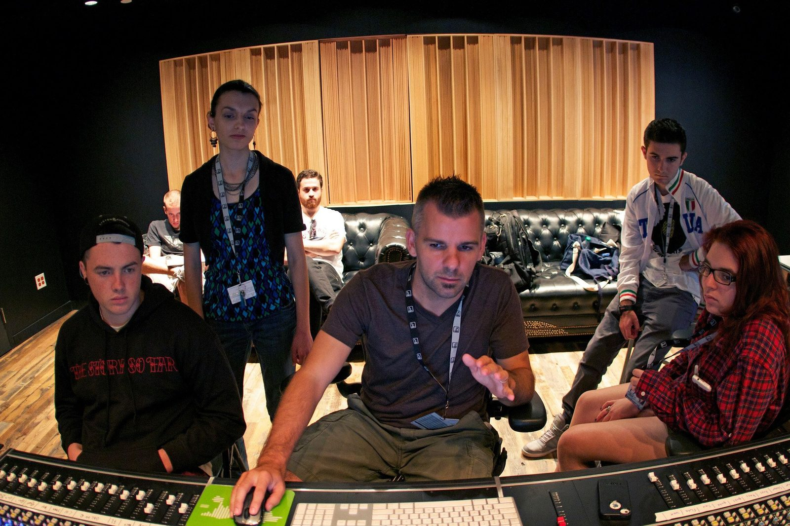
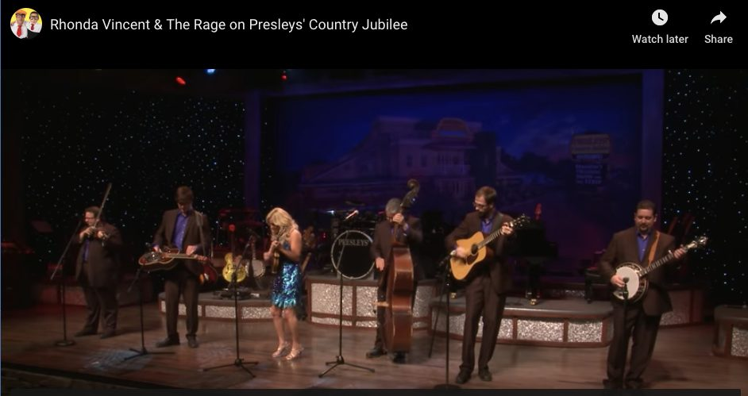
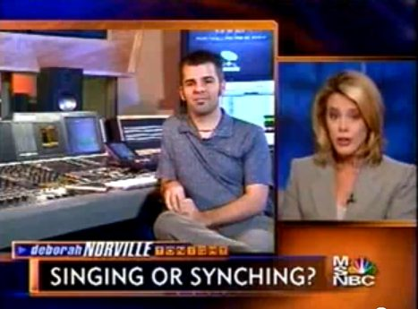
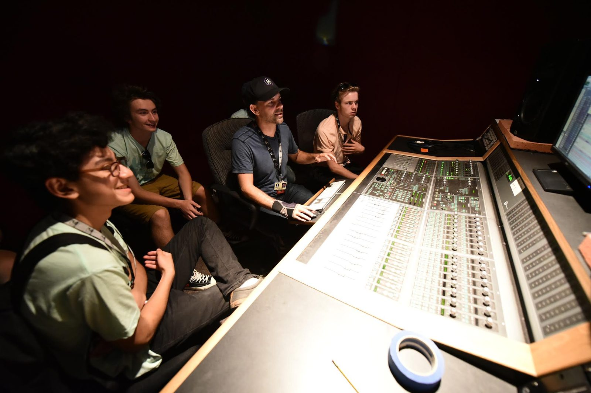

Credits
Selected work
Twenty-five years of production, engineering, and publishing. Listed plainly, because the numbers do the arguing.
- 140+ episodes post-produced
- 13 countries broadcast
- 2 books, internationally distributed
- 50+ courses produced
- 6,000+ students taught

Television
-

Presleys' Country JubileePost producer / editor · RFD NetworkMore than 140 episodes. Broadcast in thirteen countries to a weekly audience of roughly 500,000. -

Tonight with Deborah NorvilleProducer / editor · MSNBCSegments with more than 820,000 views on YouTube. Brought on as the studio expert for a piece on pitch correction — "Singing or Synching?"
Music & audio engineering
Vince Gill · Earl Scruggs · The Oak Ridge Boys · Paul Franklin · Bill Medley · Collin Raye
-
Peter Pan, starring Cathy RigbyMixed the orchestral score
-
Editing, pocketing and pitch correctionNashville sessions, 2000sThe work that became the subject of the first book.
Instructional video
-
Gibson's Learn & Master GuitarProducer, videographer and editor · Legacy Learning SystemsReached more than 100,000 guitar students worldwide. Winner of the Acoustic Guitar Player's Choice Gold Award. The series also won a Telly Award for Legacy Learning Systems.
-
Multi-Platinum.comFounder · 50+ courses producedOne of the first online training companies in music production. Courses on recording, editing, and mixing, taught by working Nashville engineers.
-
Live from Virtual RealityProducer
Books
-
Multi-Platinum Pro Tools: Advanced Editing, Pocketing and Autotuning TechniquesWith Brady Barnett · Focal Press, 2006 · ISBN 978-0-240-52023-0Distributed internationally.
-
Pro Tools 9: The Mixer's ToolkitWith Kevin Ward · Focal Press, 2011 · ISBN 978-0-240-81871-9
-
Exploring the Audio Engineering Technology Faculty Teaching Experience During the COVID-19 PandemicDoctoral dissertation · Tennessee State University, 2022
-
AES Journal Conference SummaryJournal of the Audio Engineering Society, 2016
Curriculum
-
The Recording Academy Presents: GRAMMY Career PathwaysGRAMMY Foundation · 2018 · online curriculum
-
GRAMMY Camp: WeekendsGRAMMY Foundation · 2016 · online curriculum
-
Producing Electronic Music in Pro ToolsWith A. Falcone · LANDR · 2023
Teaching
-
Belmont UniversityAssociate Professor of Media Production · Mike Curb College of Entertainment & Music BusinessCinema, television and media production. More than 6,000 students.
-

GRAMMY CampAudio engineering faculty · 50+ camps since 2009The GRAMMY Museum's program for high school students. Los Angeles at USC since 2009, New York at the Converse Rubber Tracks studios 2011–2018, and Nashville at Belmont 2012–2018 — including camps at 34 Music Square East, home of historic Columbia Studio A and the Quonset Hut.